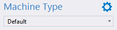

Machine Types can be selected and managed using the Machine Type selections in Network Editor. Machine Type Manager can be accessed from the settings icon.

For more information, see section Managing Machine Types
Epec Oy reserves all rights for improvements without prior notice.
Source file Using_Machine_Types.htm
Last updated 25-Jun-2025